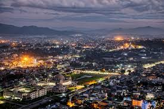
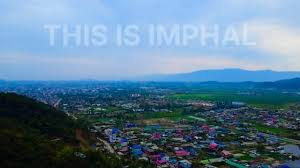
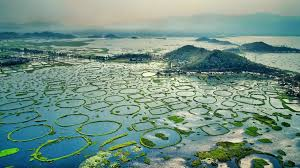
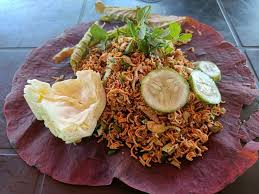

Imphal is a charming capital nestled in the lush valley of northeastern India, surrounded by gentle hills and rich greenery. Known for its serene beauty and cultural depth, the city offers a peaceful lifestyle where tradition and modernity blend seamlessly. The pace of life is relatively calm, with strong community bonds, vibrant local markets, and a deep respect for nature and heritage.
Imphal’s beauty lies in its clean environment, fresh air, and scenic landscapes.Loktak Lake is a breathtaking natural wonder, often called the “lifeline of Manipur” and one of the most unique lakes in the world. Its beauty lies not just in its vast, shimmering waters, but in the extraordinary floating islands known as phumdis—masses of vegetation, soil, and organic matter that drift gently across the surface, creating a dreamlike landscape.At sunrise and sunset, Loktak transforms into a canvas of golden hues, where the sky reflects perfectly on the calm water, and fishermen glide silently in traditional boats. The lake supports a rich ecosystem and is home to the famous Keibul Lamjao National Park, the world’s only floating national park, where the endangered Sangai deer gracefully roams. Beyond its natural charm, Loktak Lake sustains the lives of many local communities, who depend on it for fishing, farming, and daily living. Small floating huts and fishing enclosures dot the lake, adding to its cultural richness and visual appeal. Peaceful, poetic, and deeply connected to nature, Loktak Lake is not just a destination—it is an experience that captures the soul of Manipur.



The city is also rich in history and culture. Kangla Fort, once the seat of Manipuri kings, stands as a symbol of pride and heritage. Another important site is Ima Keithel, the world’s largest all-women-run market, reflecting the strength and role of women in Manipuri society.
Food in Imphal is simple, healthy, and deeply rooted in tradition. Local dishes like Eromba (a spicy mashed vegetable dish), Singju, and Chamthong showcase fresh ingredients, aromatic herbs, and balanced flavors. Fermented foods are commonly used, adding a distinctive taste to the cuisine.
Other scenic and cultural attractions include Shree Govindajee Temple, known for its spiritual significance, and War Cemetery, which honors soldiers of World War II.
Overall, Imphal is a city that captivates visitors with its natural beauty, rich traditions, flavorful cuisine, and warm, welcoming people—making it a hidden gem in India’s northeast.
